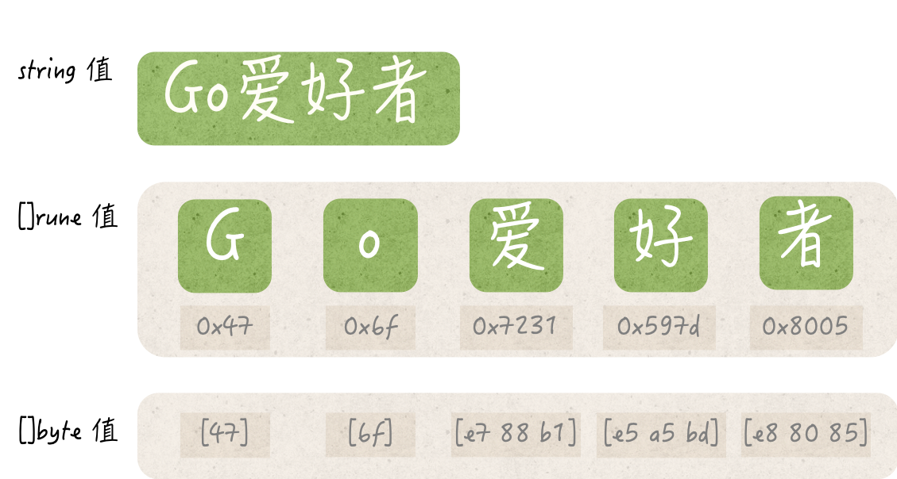

- 00 导读 写给0基础入门的Go语言学习者.md.html
- 00 导读 学习专栏的正确姿势.md.html
- 00 开篇词 跟着学，你也能成为Go语言高手.md.html
- 01 工作区和GOPATH.md.html
- 02 命令源码文件.md.html
- 03 库源码文件.md.html
- 04 程序实体的那些事儿（上）.md.html
- 05 程序实体的那些事儿（中）.md.html
- 06 程序实体的那些事儿 （下）.md.html
- 07 数组和切片.md.html
- 08 container包中的那些容器.md.html
- 09 字典的操作和约束.md.html
- 10 通道的基本操作.md.html
- 11 通道的高级玩法.md.html
- 12 使用函数的正确姿势.md.html
- 13 结构体及其方法的使用法门.md.html
- 14 接口类型的合理运用.md.html
- 15 关于指针的有限操作.md.html
- 16 go语句及其执行规则（上）.md.html
- 17 go语句及其执行规则（下）.md.html
- 18 if语句、for语句和switch语句.md.html
- 19 错误处理（上）.md.html
- 20 错误处理 （下）.md.html
- 21 panic函数、recover函数以及defer语句 （上）.md.html
- 22 panic函数、recover函数以及defer语句（下）.md.html
- 23 测试的基本规则和流程 （上）.md.html
- 24 测试的基本规则和流程（下）.md.html
- 25 更多的测试手法.md.html
- 26 sync.Mutex与sync.RWMutex.md.html
- 27 条件变量sync.Cond （上）.md.html
- 28 条件变量sync.Cond （下）.md.html
- 29 原子操作（上）.md.html
- 30 原子操作（下）.md.html
- 31 sync.WaitGroup和sync.Once.md.html
- 32 context.Context类型.md.html
- 33 临时对象池sync.Pool.md.html
- 34 并发安全字典sync.Map （上）.md.html
- 35 并发安全字典sync.Map (下).md.html
- 36 unicode与字符编码.md.html
- 37 strings包与字符串操作.md.html
- 38 bytes包与字节串操作（上）.md.html
- 39 bytes包与字节串操作（下）.md.html
- 40 io包中的接口和工具 （上）.md.html
- 41 io包中的接口和工具 （下）.md.html
- 42 bufio包中的数据类型 （上）.md.html
- 43 bufio包中的数据类型（下）.md.html
- 44 使用os包中的API （上）.md.html
- 45 使用os包中的API （下）.md.html
- 46 访问网络服务.md.html
- 47 基于HTTP协议的网络服务.md.html
- 48 程序性能分析基础（上）.md.html
- 49 程序性能分析基础（下）.md.html
- 尾声 愿你披荆斩棘，所向无敌.md.html
- 新年彩蛋 完整版思考题答案.md.html
- 捐赠
36 unicode与字符编码
到目前为止，我们已经一起陆陆续续地学完了Go语言中那些最重要也最有特色的概念、语法和编程方式。我对于它们非常喜爱，简直可以用如数家珍来形容了。
在开始今天的内容之前，我先来做一个简单的总结。
Go语言经典知识总结
基于混合线程的并发编程模型自然不必多说。
在数据类型方面有：
- 基于底层数组的切片；
- 用来传递数据的通道；
- 作为一等类型的函数；
- 可实现面向对象的结构体；
- 能无侵入实现的接口等。
在语法方面有：
- 异步编程神器
go语句； - 函数的最后关卡
defer语句； - 可做类型判断的
switch语句； - 多通道操作利器
select语句； - 非常有特色的异常处理函数
panic和recover。
除了这些，我们还一起讨论了测试Go程序的主要方式。这涉及了Go语言自带的程序测试套件，相关的概念和工具包括：
- 独立的测试源码文件；
- 三种功用不同的测试函数；
- 专用的
testing代码包； - 功能强大的
go test命令。
另外，就在前不久，我还为你深入讲解了Go语言提供的那些同步工具。它们也是Go语言并发编程工具箱中不可或缺的一部分。这包括了：
- 经典的互斥锁；
- 读写锁；
- 条件变量；
- 原子操作。
以及Go语言特有的一些数据类型，即：
- 单次执行小助手
sync.Once； - 临时对象池
sync.Pool； - 帮助我们实现多goroutine协作流程的
sync.WaitGroup、context.Context； - 一种高效的并发安全字典
sync.Map。
毫不夸张地说，如果你真正地掌握了上述这些知识，那么就已经获得了Go语言编程的精髓。
在这之后，你再去研读Go语言标准库和那些优秀第三方库中的代码的时候，就一定会事半功倍。同时，在使用Go语言编写软件的时候，你肯定也会如鱼得水、游刃有余的。
我用了大量的篇幅讲解了Go语言中最核心的知识点，真心希望你已经搞懂了这些内容。
在后面的日子里，我会与你一起去探究Go语言标准库中最常用的那些代码包，弄清它们的用法、了解它们的机理。当然了，我还会顺便讲一讲那些必备的周边知识。
前导内容1：Go语言字符编码基础
首先，让我们来关注字符编码方面的问题。这应该是在计算机软件领域中非常基础的一个问题了。
我在前面说过，Go语言中的标识符可以包含“任何Unicode编码可以表示的字母字符”。我还说过，虽然我们可以直接把一个整数值转换为一个string类型的值。
但是，被转换的整数值应该可以代表一个有效的Unicode代码点，否则转换的结果就将会是"�"，即：一个仅由高亮的问号组成的字符串值。
另外，当一个string类型的值被转换为[]rune类型值的时候，其中的字符串会被拆分成一个一个的Unicode字符。
显然，Go语言采用的字符编码方案从属于Unicode编码规范。更确切地说，Go语言的代码正是由Unicode字符组成的。Go语言的所有源代码，都必须按照Unicode编码规范中的UTF-8编码格式进行编码。
换句话说，Go语言的源码文件必须使用UTF-8编码格式进行存储。如果源码文件中出现了非UTF-8编码的字符，那么在构建、安装以及运行的时候，go命令就会报告错误“illegal UTF-8 encoding”。
在这里，我们首先要对Unicode编码规范有所了解。不过，在讲述它之前，我先来简要地介绍一下ASCII编码。
前导内容 2： ASCII编码
ASCII是英文“American Standard Code for Information Interchange”的缩写，中文译为美国信息交换标准代码。它是由美国国家标准学会（ANSI）制定的单字节字符编码方案，可用于基于文本的数据交换。
它最初是美国的国家标准，后又被国际标准化组织（ISO）定为国际标准，称为ISO 646标准，并适用于所有的拉丁文字字母。
ASCII编码方案使用单个字节（byte）的二进制数来编码一个字符。标准的ASCII编码用一个字节的最高比特（bit）位作为奇偶校验位，而扩展的ASCII编码则将此位也用于表示字符。ASCII编码支持的可打印字符和控制字符的集合也被叫做ASCII编码集。
我们所说的Unicode编码规范，实际上是另一个更加通用的、针对书面字符和文本的字符编码标准。它为世界上现存的所有自然语言中的每一个字符，都设定了一个唯一的二进制编码。
它定义了不同自然语言的文本数据在国际间交换的统一方式，并为全球化软件创建了一个重要的基础。
Unicode编码规范以ASCII编码集为出发点，并突破了ASCII只能对拉丁字母进行编码的限制。它不但提供了可以对世界上超过百万的字符进行编码的能力，还支持所有已知的转义序列和控制代码。
我们都知道，在计算机系统的内部，抽象的字符会被编码为整数。这些整数的范围被称为代码空间。在代码空间之内，每一个特定的整数都被称为一个代码点。
一个受支持的抽象字符会被映射并分配给某个特定的代码点，反过来讲，一个代码点总是可以被看成一个被编码的字符。
Unicode编码规范通常使用十六进制表示法来表示Unicode代码点的整数值，并使用“U+”作为前缀。比如，英文字母字符“a”的Unicode代码点是U+0061。在Unicode编码规范中，一个字符能且只能由与它对应的那个代码点表示。
Unicode编码规范现在的最新版本是11.0，并会于2019年3月发布12.0版本。而Go语言从1.10版本开始，已经对Unicode的10.0版本提供了全面的支持。对于绝大多数的应用场景来说，这已经完全够用了。
Unicode编码规范提供了三种不同的编码格式，即：UTF-8、UTF-16和UTF-32。其中的UTF是UCS Transformation Format的缩写。而UCS又是Universal Character Set的缩写，但也可以代表Unicode Character Set。所以，UTF也可以被翻译为Unicode转换格式。它代表的是字符与字节序列之间的转换方式。
在这几种编码格式的名称中，“-”右边的整数的含义是，以多少个比特位作为一个编码单元。以UTF-8为例，它会以8个比特，也就是一个字节，作为一个编码单元。并且，它与标准的ASCII编码是完全兼容的。也就是说，在[0x00, 0x7F]的范围内，这两种编码表示的字符都是相同的。这也是UTF-8编码格式的一个巨大优势。
UTF-8是一种可变宽的编码方案。换句话说，它会用一个或多个字节的二进制数来表示某个字符，最多使用四个字节。比如，对于一个英文字符，它仅用一个字节的二进制数就可以表示，而对于一个中文字符，它需要使用三个字节才能够表示。不论怎样，一个受支持的字符总是可以由UTF-8编码为一个字节序列。以下会简称后者为UTF-8编码值。
现在，在你初步地了解了这些知识之后，请认真地思考并回答下面的问题。别担心，我会在后面进一步阐述Unicode、UTF-8以及Go语言对它们的运用。
问题：一个string类型的值在底层是怎样被表达的？
典型回答 是在底层，一个string类型的值是由一系列相对应的Unicode代码点的UTF-8编码值来表达的。
问题解析
在Go语言中，一个string类型的值既可以被拆分为一个包含多个字符的序列，也可以被拆分为一个包含多个字节的序列。
前者可以由一个以rune为元素类型的切片来表示，而后者则可以由一个以byte为元素类型的切片代表。
rune是Go语言特有的一个基本数据类型，它的一个值就代表一个字符，即：一个Unicode字符。
比如，'G'、'o'、'爱'、'好'、'者'代表的就都是一个Unicode字符。
我们已经知道，UTF-8编码方案会把一个Unicode字符编码为一个长度在[1, 4]范围内的字节序列。所以，一个rune类型的值也可以由一个或多个字节来代表。
type rune = int32
根据rune类型的声明可知，它实际上就是int32类型的一个别名类型。也就是说，一个rune类型的值会由四个字节宽度的空间来存储。它的存储空间总是能够存下一个UTF-8编码值。
一个rune类型的值在底层其实就是一个UTF-8编码值。前者是（便于我们人类理解的）外部展现，后者是（便于计算机系统理解的）内在表达。
请看下面的代码：
str := "Go爱好者"
fmt.Printf("The string: %q\n", str)
fmt.Printf(" => runes(char): %q\n", []rune(str))
fmt.Printf(" => runes(hex): %x\n", []rune(str))
fmt.Printf(" => bytes(hex): [% x]\n", []byte(str))
字符串值"Go爱好者"如果被转换为[]rune类型的值的话，其中的每一个字符（不论是英文字符还是中文字符）就都会独立成为一个rune类型的元素值。因此，这段代码打印出的第二行内容就会如下所示：
=> runes(char): ['G' 'o' '爱' '好' '者']
又由于，每个rune类型的值在底层都是由一个UTF-8编码值来表达的，所以我们可以换一种方式来展现这个字符序列：
=> runes(hex): [47 6f 7231 597d 8005]
可以看到，五个十六进制数与五个字符相对应。很明显，前两个十六进制数47和6f代表的整数都比较小，它们分别表示字符'G'和'o'。
因为它们都是英文字符，所以对应的UTF-8编码值用一个字节表达就足够了。一个字节的编码值被转换为整数之后，不会大到哪里去。
而后三个十六进制数7231、597d和8005都相对较大，它们分别表示中文字符'爱'、'好'和'者'。
这些中文字符对应的UTF-8编码值，都需要使用三个字节来表达。所以，这三个数就是把对应的三个字节的编码值，转换为整数后得到的结果。
我们还可以进一步地拆分，把每个字符的UTF-8编码值都拆成相应的字节序列。上述代码中的第五行就是这么做的。它会得到如下的输出：
=> bytes(hex): [47 6f e7 88 b1 e5 a5 bd e8 80 85]
这里得到的字节切片比前面的字符切片明显长了很多。这正是因为一个中文字符的UTF-8编码值需要用三个字节来表达。
这个字节切片的前两个元素值与字符切片的前两个元素值是一致的，而在这之后，前者的每三个元素值才对应字符切片中的一个元素值。
注意，对于一个多字节的UTF-8编码值来说，我们可以把它当做一个整体转换为单一的整数，也可以先把它拆成字节序列，再把每个字节分别转换为一个整数，从而得到多个整数。
这两种表示法展现出来的内容往往会很不一样。比如，对于中文字符'爱'来说，它的UTF-8编码值可以展现为单一的整数7231，也可以展现为三个整数，即：e7、88和b1。
- （字符串值的底层表示）
总之，一个string类型的值会由若干个Unicode字符组成，每个Unicode字符都可以由一个rune类型的值来承载。
这些字符在底层都会被转换为UTF-8编码值，而这些UTF-8编码值又会以字节序列的形式表达和存储。因此，一个string类型的值在底层就是一个能够表达若干个UTF-8编码值的字节序列。
知识扩展
问题 1：使用带有range子句的for语句遍历字符串值的时候应该注意什么？
带有range子句的for语句会先把被遍历的字符串值拆成一个字节序列，然后再试图找出这个字节序列中包含的每一个UTF-8编码值，或者说每一个Unicode字符。
这样的for语句可以为两个迭代变量赋值。如果存在两个迭代变量，那么赋给第一个变量的值，就将会是当前字节序列中的某个UTF-8编码值的第一个字节所对应的那个索引值。
而赋给第二个变量的值，则是这个UTF-8编码值代表的那个Unicode字符，其类型会是rune。
例如，有这么几行代码：
str := "Go爱好者"
for i, c := range str {
fmt.Printf("%d: %q [% x]\n", i, c, []byte(string(c)))
}
这里被遍历的字符串值是"Go爱好者"。在每次迭代的时候，这段代码都会打印出两个迭代变量的值，以及第二个值的字节序列形式。完整的打印内容如下：
0: 'G' [47]
1: 'o' [6f]
2: '爱' [e7 88 b1]
5: '好' [e5 a5 bd]
8: '者' [e8 80 85]
第一行内容中的关键信息有0、'G'和[47]。这是由于这个字符串值中的第一个Unicode字符是'G'。该字符是一个单字节字符，并且由相应的字节序列中的第一个字节表达。这个字节的十六进制表示为47。
第二行展示的内容与之类似，即：第二个Unicode字符是'o'，由字节序列中的第二个字节表达，其十六进制表示为6f。
再往下看，第三行展示的是'爱'，也是第三个Unicode字符。因为它是一个中文字符，所以由字节序列中的第三、四、五个字节共同表达，其十六进制表示也不再是单一的整数，而是e7、88和b1组成的序列。
下面要注意了，正是因为'爱'是由三个字节共同表达的，所以第四个Unicode字符'好'对应的索引值并不是3，而是2加3后得到的5。
这里的2代表的是'爱'对应的索引值，而3代表的则是'爱'对应的UTF-8编码值的宽度。对于这个字符串值中的最后一个字符'者'来说也是类似的，因此，它对应的索引值是8。
由此可以看出，这样的for语句可以逐一地迭代出字符串值里的每个Unicode字符。但是，相邻的Unicode字符的索引值并不一定是连续的。这取决于前一个Unicode字符是否为单字节字符。
正因为如此，如果我们想得到其中某个Unicode字符对应的UTF-8编码值的宽度，就可以用下一个字符的索引值减去当前字符的索引值。
初学者可能会对for语句的这种行为感到困惑，因为它给予两个迭代变量的值看起来并不总是对应的。不过，一旦我们了解了它的内在机制就会拨云见日、豁然开朗。
总结
我们今天把目光聚焦在了Unicode编码规范、UTF-8编码格式，以及Go语言对字符串和字符的相关处理方式上。
Go语言的代码是由Unicode字符组成的，它们都必须由Unicode编码规范中的UTF-8编码格式进行编码并存储，否则就会导致go命令的报错。
Unicode编码规范中的编码格式定义的是：字符与字节序列之间的转换方式。其中的UTF-8是一种可变宽的编码方案。
它会用一个或多个字节的二进制数来表示某个字符，最多使用四个字节。一个受支持的字符，总是可以由UTF-8编码为一个字节序列，后者也可以被称为UTF-8编码值。
Go语言中的一个string类型值会由若干个Unicode字符组成，每个Unicode字符都可以由一个rune类型的值来承载。
这些字符在底层都会被转换为UTF-8编码值，而这些UTF-8编码值又会以字节序列的形式表达和存储。因此，一个string类型的值在底层就是一个能够表达若干个UTF-8编码值的字节序列。
初学者可能会对带有range子句的for语句遍历字符串值的行为感到困惑，因为它给予两个迭代变量的值看起来并不总是对应的。但事实并非如此。
这样的for语句会先把被遍历的字符串值拆成一个字节序列，然后再试图找出这个字节序列中包含的每一个UTF-8编码值，或者说每一个Unicode字符。
相邻的Unicode字符的索引值并不一定是连续的。这取决于前一个Unicode字符是否为单字节字符。一旦我们清楚了这些内在机制就不会再困惑了。
对于Go语言来说，Unicode编码规范和UTF-8编码格式算是基础之一了。我们应该了解到它们对Go语言的重要性。这对于正确理解Go语言中的相关数据类型以及日后的相关程序编写都会很有好处。
思考题
今天的思考题是：判断一个Unicode字符是否为单字节字符通常有几种方式？
© 2019 - 2023 Liangliang Lee. Powered by gin and hexo-theme-book.